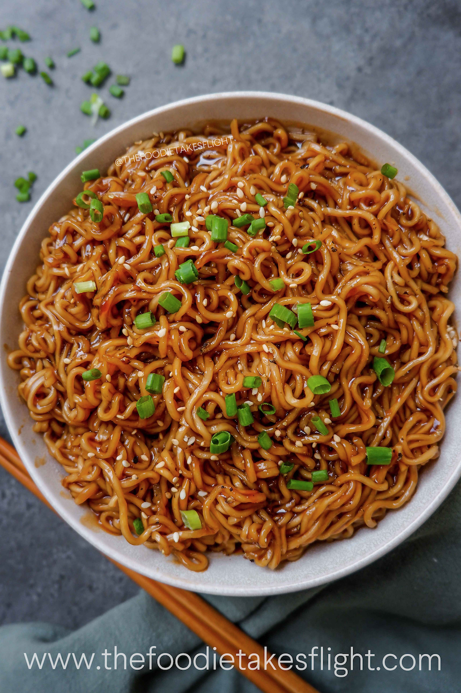

Description
Noodles are a type of food made from unleavened dough which is rolled flat and cut,
stretched or extruded, into long strips or strings. Noodles can be refrigerated for
short-term storage or dried and stored for future use.
Ingredients
- Noodles
- oil
- Onions
- Green Chillies
- Veggies
Steps:
- Boil Noodles
- Prepare the veggies
- Drain noodles
- Fry veggies with onion, green chillies and garlic
- Once cooked , put noodles and sauces.
- Mix them properly and tada noodles is ready.